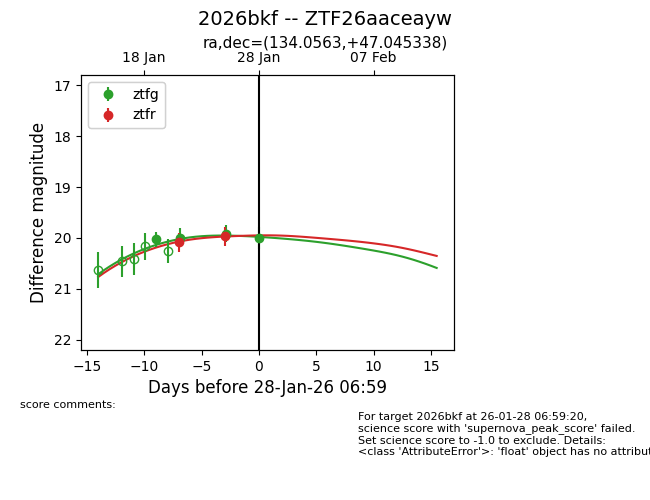
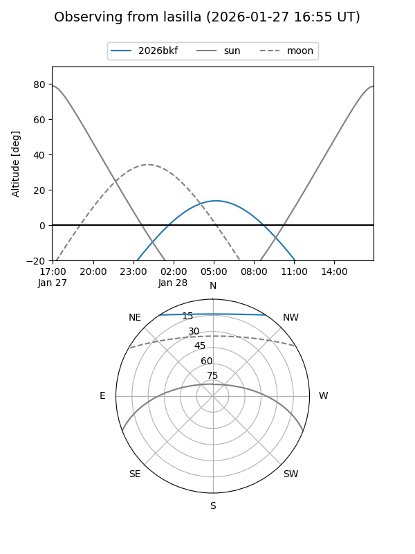
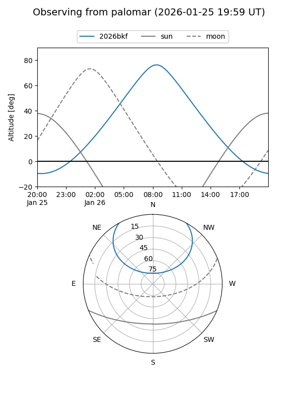
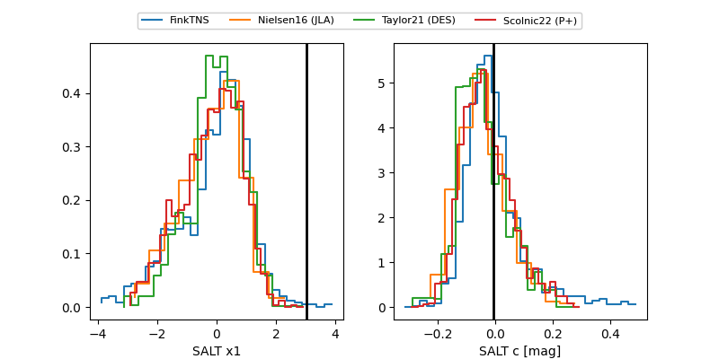

2026bkf
Target 2026bkf at 2026-01-29 09:16
Aliases and brokers:
FINK: link
Lasair: link
ALeRCE: link
TNS: link
YSE: link
alt names
ZTF26aaceayw (ztf,fink_ztf)
2026bkf (tns,yse)
Coordinates:
equatorial (ra, dec) = 134.0563,+47.04534
equatorial (HMS+DMS) = 08:56:13.52,+47:02:43.22
galactic (l, b) = (172.8550,+40.38069)
Flags:
Photometry:
last ztfg=20.01, ztfr=19.96
4 ztfg, 2 ztfr detections
Lightcurve

Visibility


Additional plots
